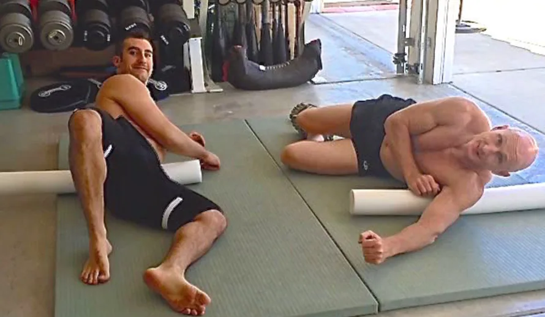

B250 · Knowledge vs. Wisdom
Hi {first_name},
In a conversation this weekend, the concept of knowledge vs. wisdom came up.
Since then, I have been inspired and reflecting much on the difference between the two and how they show up in life - specifically in the realm of health and performance.
Simply stated, knowledge refers mainly to taking in information, whereas wisdom is how we apply that information.
Knowledge is more a matter of the mind, whereas wisdom is more a matter of the heart.
This notion was further driven home during a call I had earlier today with an upcoming fitness pro in Norway. We discussed the type of professional he is seeking to become - a heart-centered one who acts from a place primarily of wisdom, rather than purely knowledge.
When it comes to physical training, there certainly are specific training principles/science we know to be true. How we choose exercises, structure training phases, select reps, sets, loads, tempo, etc., are highly important facets to elicit a specific training response.
That said, you can be successful as a coach/trainer while being a bit of both scientist AND artist. In fact, I believe it helps tremendously.
When working with Paul Chek, I observed first hand this very thing at work. Paul would sometimes take hours to create my programs, and although they were VERY scientifically based, steeped in high-level program design principles, there was also a big feeling, meditative and artistic aspect to them.
 This approach has had a powerful influence on me since 2013, and is how I design programs today and teach on this topic.
When you take this path, you begin integrating the heart with the mind, and turn knowledge into wisdom - this is where the gold is at!
However, this does not and cannot happen overnight - it takes countless reps, successes and failures to develop authentic wisdom.
This is why I’m stoked to share, while registration for Kettlebell Lifestyle is still closed to the public until late October, this week starts the Kettlebell Lifestyle Masters Program.
This Masters Program works hand-in-hand with Kettlebell Lifestyle (which those who sign up for this will receive immediate access), and provides very special 10+ week-long immersion Masters-level experience.
This group will be kept SUPER small on purpose.
You will be held accountable.
You will analyze technique and receive feedback.
You will learn the essentials of program design.
You will be asked to design workouts.
You will meet and be coached weekly by myself and co-facilitator Dr. Drew Vercellino.
You will learn strategies and tactics to gain more income by bringing/growing aspects of your business online, all while staying in integrity with your values.
I am holding a live Zoom Call tomorrow, Monday, at 6:15pm PST for approximately 45 minutes, to answer any questions and to help determine if you are a fit for this opportunity.
Here is the Zoom Link to join the call at 6:15pm PST on Monday, 9/14: https://us02web.zoom.us/j/5580027238
If you cannot make it and would like to watch the recording, please email me and I will send you a link later that evening - group coaching starts this week.
I wish you all the best, and if you’re highly motivated to turn some badass knowledge into applied wisdom you can use to leverage yourself as a kettlebell expert, I’ve got your back.
Talk soon,
Mike |